4. Resultados e Análises:
- (1) Desenvolva um programa para fazer a leitura de suas imagens --utilize as imagens gravadas anteriormente, bem como imagens do seu trabalho de video. O programa deve realizar a deteção de Features pelos métodos dos exercícios. Deve ainda salvar as imagens com identificação das Features em arquivo .
O programa realiza a detecção de características em uma imagem por meio de três métodos: detecção de cantos de Harris, detecção de bons pontos para rastreamento usando o algoritmo Shi-Tomasi e detecção de características Scale-Invariant Feature Transform (SIFT). O programa carrega uma imagem de entrada, aplica cada um dos métodos de detecção de características e, em seguida, salva as imagens resultantes com as características identificadas em arquivos separados. Essas técnicas são úteis em áreas como visão computacional, reconhecimento de padrões e processamento de imagens, permitindo identificar pontos de interesse e realizar análises mais avançadas nas imagens.
import cv2
import numpy as np
def detect_harris_corners(image):
gray = cv2.cvtColor(image, cv2.COLOR_BGR2GRAY)
gray = np.float32(gray)
dst = cv2.cornerHarris(gray, 2, 3, 0.04)
dst = cv2.dilate(dst, None)
ret, dst = cv2.threshold(dst, 0.01 * dst.max(), 255, 0)
dst = cv2.convertScaleAbs(dst)
image[dst > 0.01 * dst.max()] = [0, 0, 255]
return image
def detect_good_features(image):
gray = cv2.cvtColor(image, cv2.COLOR_BGR2GRAY)
corners = cv2.goodFeaturesToTrack(gray, 25, 0.01, 10)
corners = np.int0(corners)
for corner in corners:
x, y = corner.ravel()
cv2.circle(image, (x, y), 3, (0, 255, 0), -1)
return image
def detect_sift_features(image):
gray = cv2.cvtColor(image, cv2.COLOR_BGR2GRAY)
sift = cv2.SIFT_create()
keypoints = sift.detect(gray, None)
image = cv2.drawKeypoints(image, keypoints, None)
return image
# Caminho para a imagem de entrada
input_image_path = "gabriel.png"
# Carregar a imagem
image = cv2.imread(input_image_path)
# Realizar detecção de Harris corners em uma cópia da imagem
harris_corners_image = detect_harris_corners(image.copy())
# Realizar detecção de Good features em outra cópia da imagem
good_features_image = detect_good_features(image.copy())
# Realizar detecção de SIFT features na imagem original
sift_features_image = detect_sift_features(image)
# Salvar as imagens com as características identificadas
cv2.imwrite("harris_corners.jpg", harris_corners_image)
cv2.imwrite("good_features.jpg", good_features_image)
cv2.imwrite("sift_features.jpg", sift_features_image)
Resultado:
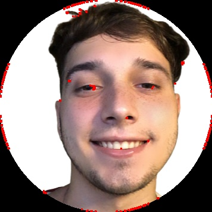 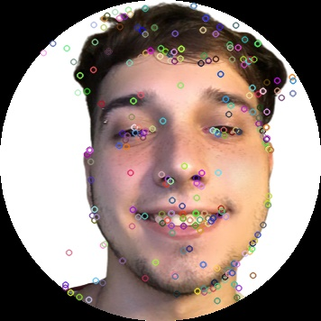(2) Outro programa modificando o item (1), agora fazendo a leitura de imagem da webcam. Neste caso, o programa deve adicionalmente mostrar uma janela ao vivo com a imagem e o resultado da imagem de rastreamento. programa lab6d.py
Este código em Python utiliza a biblioteca OpenCV para realizar a detecção de características em tempo real a partir da webcam. Ele inclui três métodos de detecção: Harris Corner Detection, Good Features to Track e Scale-Invariant Feature Transform (SIFT). O programa captura os frames da webcam e exibe-os em uma janela, juntamente com as detecções de características aplicadas a cada frame. Quando a tecla 'c' é pressionada, as imagens resultantes de cada detecção são armazenadas em arquivos separados. O código permite visualizar e capturar imagens com os resultados das detecções em tempo real, fornecendo uma base para aplicações que envolvem visão computacional e processamento de imagens.
import cv2
import numpy as np
def detect_harris_corners(image):
gray = cv2.cvtColor(image, cv2.COLOR_BGR2GRAY)
gray = np.float32(gray)
dst = cv2.cornerHarris(gray, 2, 3, 0.04)
dst = cv2.dilate(dst, None)
ret, dst = cv2.threshold(dst, 0.01 * dst.max(), 255, 0)
dst = cv2.convertScaleAbs(dst)
image[dst > 0.01 * dst.max()] = [0, 0, 255]
return image
def detect_good_features(image):
gray = cv2.cvtColor(image, cv2.COLOR_BGR2GRAY)
corners = cv2.goodFeaturesToTrack(gray, 25, 0.01, 10)
corners = np.int0(corners)
for corner in corners:
x, y = corner.ravel()
cv2.circle(image, (x, y), 3, (0, 255, 0), -1)
return image
def detect_sift_features(image):
gray = cv2.cvtColor(image, cv2.COLOR_BGR2GRAY)
sift = cv2.SIFT_create()
keypoints = sift.detect(gray, None)
image = cv2.drawKeypoints(image, keypoints, None)
return image
# Inicializar a webcam
cap = cv2.VideoCapture(0)
# Variáveis para armazenar as imagens capturadas
captured_image_harris = None
captured_image_good = None
captured_image_sift = None
while True:
# Capturar o frame da webcam
ret, frame = cap.read()
# Verificar se a captura de vídeo foi bem-sucedida
if not ret:
break
# Realizar detecção de Harris corners no frame
harris_corners_frame = detect_harris_corners(frame)
# Realizar detecção de Good features no frame
good_features_frame = detect_good_features(frame)
# Realizar detecção de SIFT features no frame
sift_features_frame = detect_sift_features(frame)
# Exibir o frame capturado e o resultado da detecção em uma janela
cv2.imshow("Detecção de Características", np.hstack((frame, harris_corners_frame, good_features_frame, sift_features_frame)))
# Verificar se a tecla 'q' foi pressionada para encerrar o programa
key = cv2.waitKey(1)
if key & 0xFF == ord('q'):
break
# Verificar se a tecla 'c' foi pressionada para capturar as imagens da webcam
elif key & 0xFF == ord('c'):
captured_image_harris = harris_corners_frame.copy()
captured_image_good = good_features_frame.copy()
captured_image_sift = sift_features_frame.copy()
print("Imagens capturadas!")
# Liberar os recursos utilizados
cap.release()
cv2.destroyAllWindows()
# Salvar as imagens capturadas, se houver
if captured_image_harris is not None:
cv2.imwrite("imagem_harris.jpg", captured_image_harris)
if captured_image_good is not None:
cv2.imwrite("imagem_good.jpg", captured_image_good)
if captured_image_sift is not None:
cv2.imwrite("imagem_sift.jpg", captured_image_sift)
Resultado:
Gabriel
 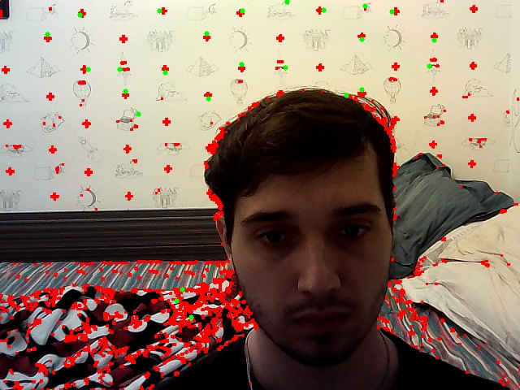
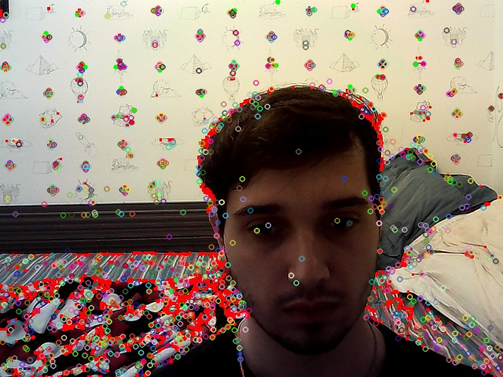
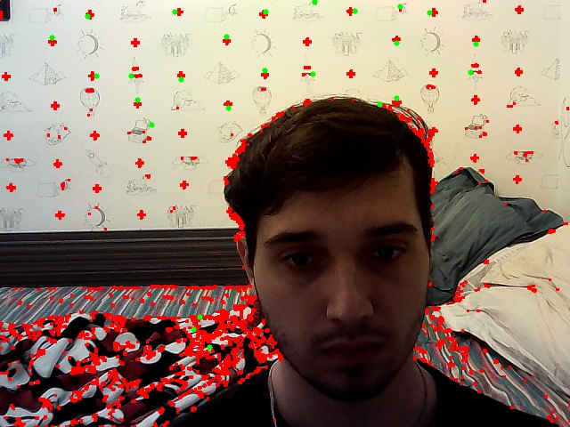
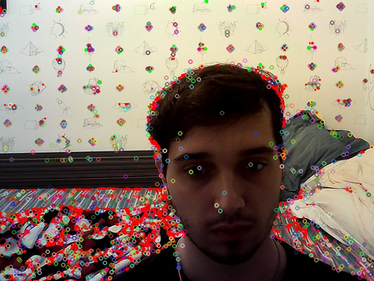
Micael
 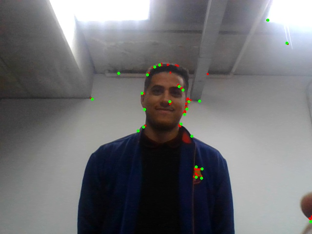
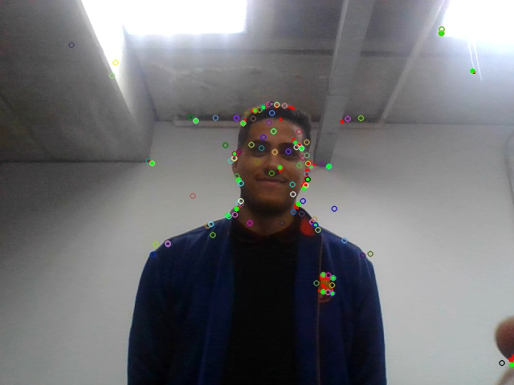
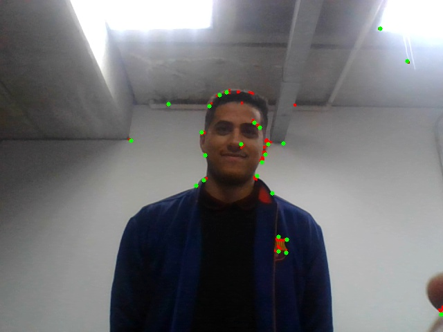
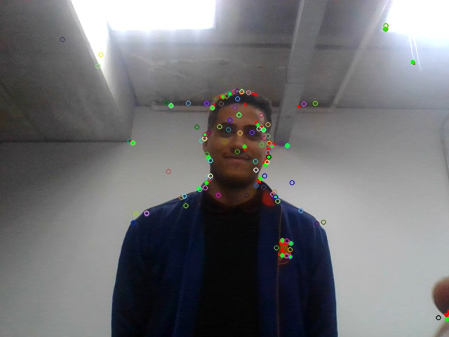
Joao
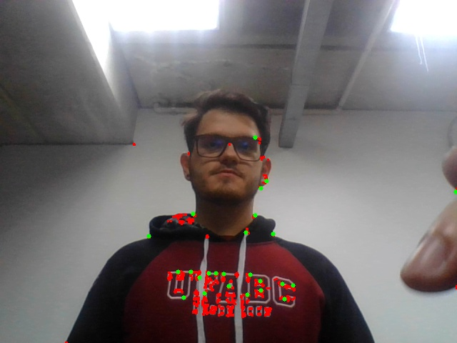 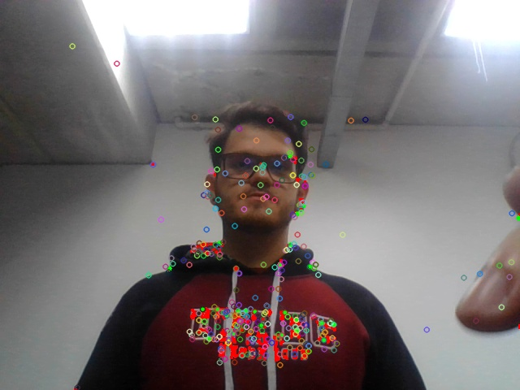
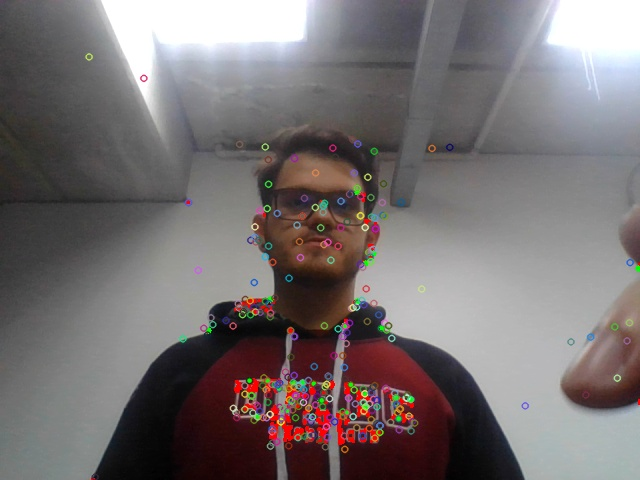
Tabuleiro
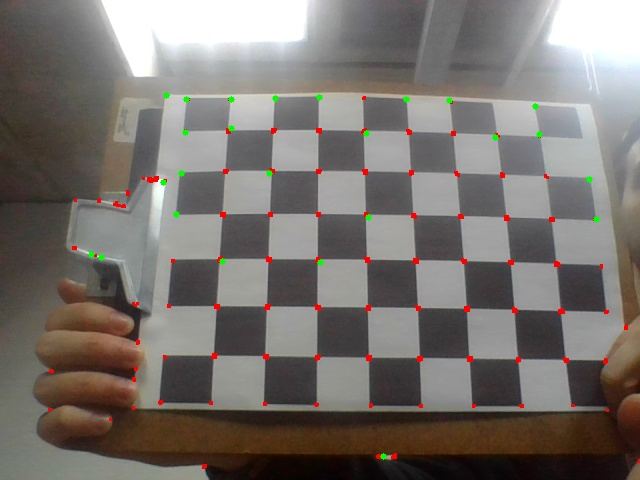 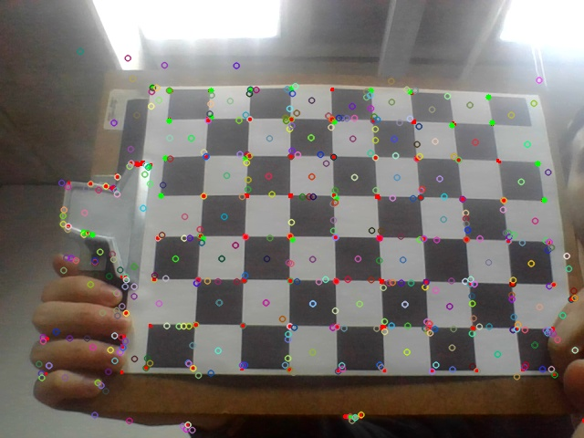
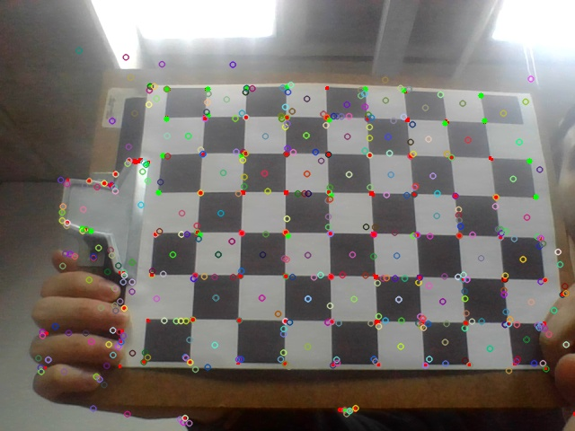